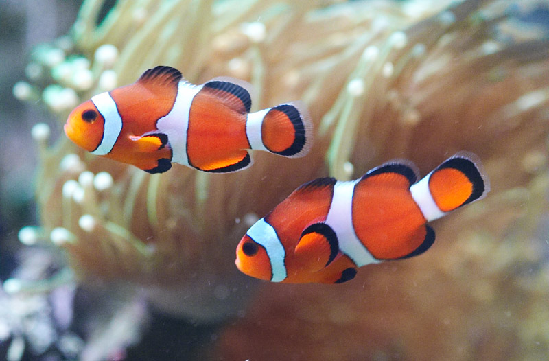

Pesci pagliaccio e anemoni
Resi famosi dai film della Pixar "alla ricerca di Nemo" e "alla ricerca di Dory" i pesci pagliaccio devono il nome alla livrea arancio-bianca che sfoggiano, che è stata paragonata al trucco usato dai clown.
Questi simpatici piccoli pesci formano coppie fisse che, normalmente, si riproducono all'interno dell'Acquario depositando circa 200 uova alla volta. è il maschio che si occupa dei piccoli mentre la femmina, più grande, difende l'anemone e la prole. Gli esemplari più giovani sono molto socievoli e si incontrano, in gruppi numerosi , presso gli Attiniari più grandi. Vivono in genere entro i 15 m di profondità su fondali rocciosi o madreporici dove siano presenti anemoni.
In natura non si incontrano mai pesci pagliaccio senza il loro anemone. (Questi due organismi infatti vivono in simbiosi mutualistica, cioè vivono a stretto contatto tra loro). Grazie ad una pelle particolarmente resistente coperta da muco, i pagliaccio riescono a muoversi liberamente tra i tentacoli urticanti degli anemoni, senza subire né danni né ustioni, utilizzando questo organismo come una vera e propria casa.
Gli anemoni sono parenti dei coralli, ma i polipi appartenenti a tale famiglia non formano colonie e sono di dimensioni maggiori. Si nutre di piccoli pesci e invertebrati che cattura tramite tentacoli urticanti. Essi offrono protezione ai pesci pagliaccio, che in cambio si occupano della pulizia del loro ospite.